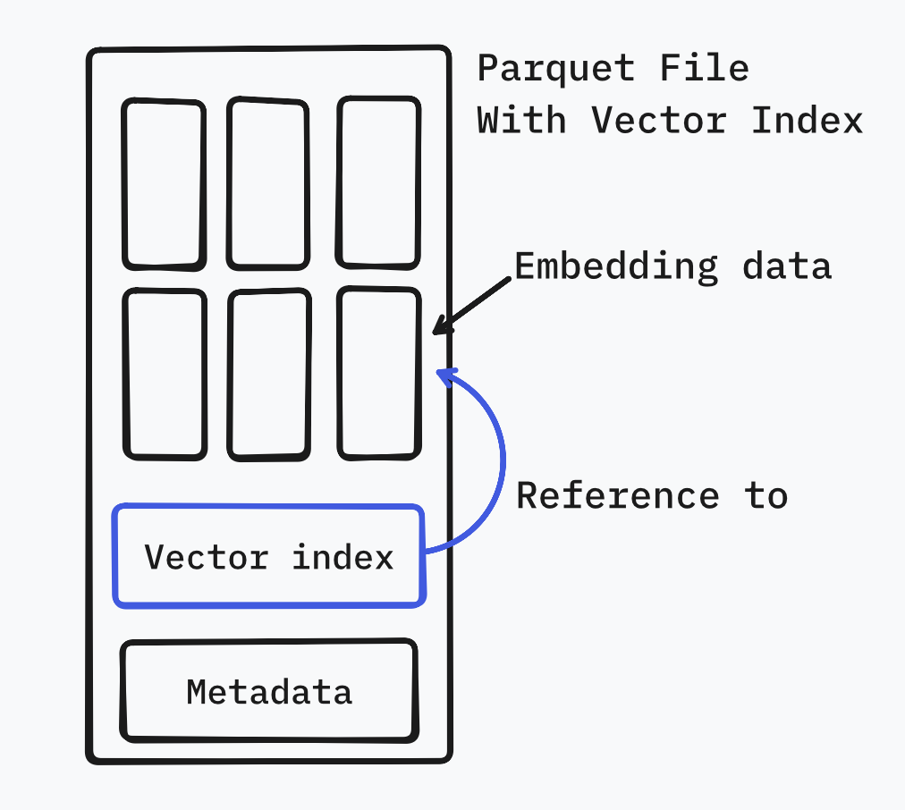
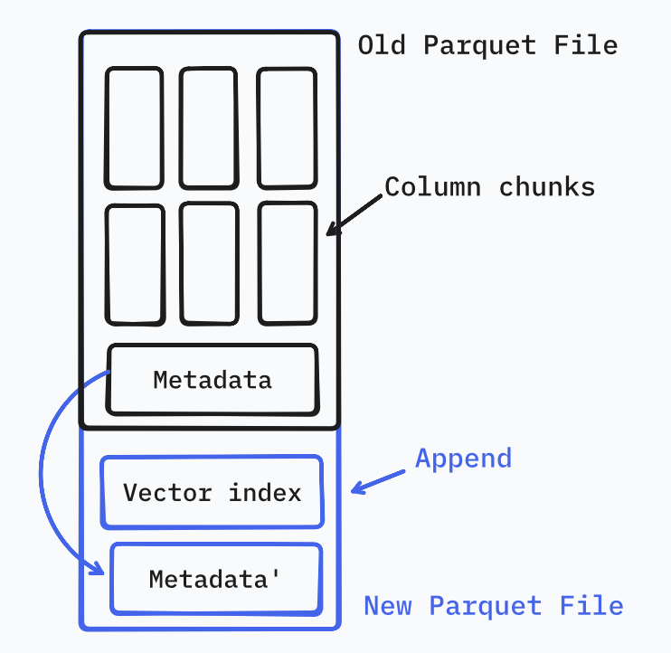
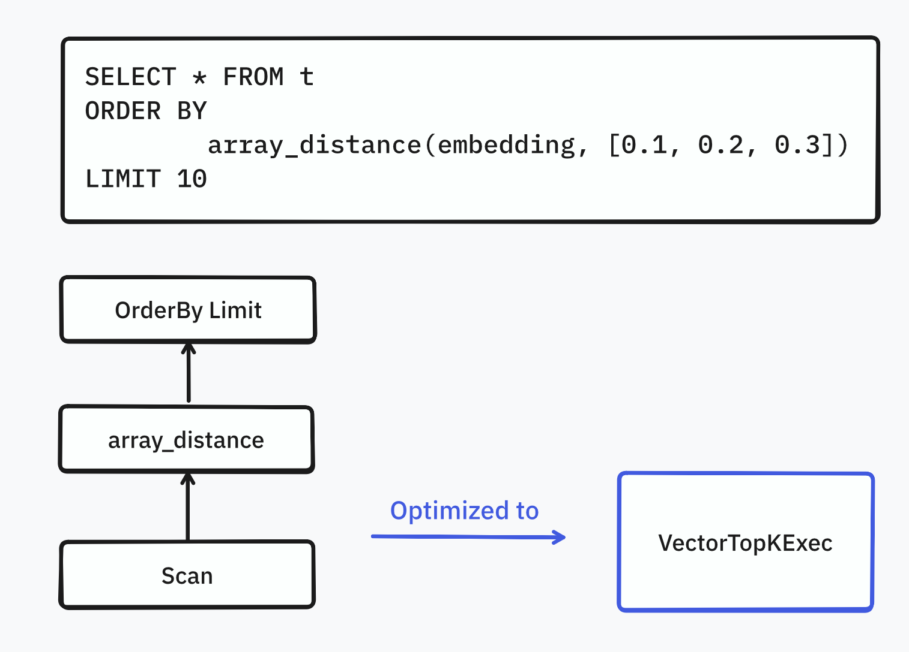

To search vector embeddings, the standard advice is almost always “spin up a vector database.”
Tools like Pinecone, Milvus, or specialized formats like Lance are fantastic pieces of engineering.
But they come with a hidden cost: complexity. New infrastructure to manage, new file formats to learn, and new data to coordinate.
But what if you didn’t need any of that? What if you could just keep your data in Parquet, the format you’re already using?
This post explores a little experiment: implementing efficient, native vector search directly inside Parquet files. Introducing pq-vector: https://github.com/XiangpengHao/pq-vector
Wait, Isn’t Parquet Terrible for Random Access?
“But Parquet is a columnar format!” I can hear you screaming. “It’s designed for heavy scans, not point lookups!”
You’re not wrong. The common wisdom is that Parquet is ill-suited for random access because it stores column values in compressed pages. To retrieve a single value—like a specific vector embedding—you typically have to decompress the entire page it resides in. This is wasteful if you only need that one item.
But let’s look at the actual numbers.
A typical vector embedding—say, from OpenAI’s text-embedding-3-small model—has 1,536 dimensions. That’s about 6KB of data. Now, guess how big a standard Parquet page is? Usually a few KB as well.
If we simply configure the Parquet writer to match the page size with the embedding size, we can effectively force each embedding into its own page. With this, “decompressing a page” just means “reading the one vector we want.”
We don’t change the file format; we just tune it.
// Configure parquet to store one embedding per page
let props = WriterProperties::builder()
.set_data_page_size_limit(vector_size) // one vector per page
.set_column_compression(embedding_col, Compression::None)
.build();With this simple configuration change, we’ve effectively turned Parquet into a random-access friendly format for our vectors.

Zero-copy Vector Indexing
Of course, fast random access isn’t enough. If you have to scan every single row to calculate distances (O(N)), it doesn’t matter how fast you can read an individual page — it’ll still be slow. We need an index.
But here’s the challenge: how do we add an index without breaking compatibility? We don’t want to create a “custom Parquet” that DuckDB or Spark can’t read.
The solution is surprisingly elegant. Parquet allows you to embed arbitrary metadata in the file footer (more details here). Standard readers will happily ignore it, but our specialized reader can look for it.
We chose the Inverted File (IVF) index for this prototype. It works by partitioning the vector space into clusters (centroids). When we want to search, we figure out which clusters are close to our query, and then we only look at the vectors in those clusters.
The best part? It’s zero-copy.
Some vector stores (HNSW-based) force you to duplicate your data into their internal structures. Our index is just a lightweight list of pointers (row IDs) and cluster centroids. The actual heavy vector data stays right where it is — in the Parquet data pages.
In our experiments with ~5,000 academic papers each with 4096-dimensional embeddings (we used qwen/qwen3-embedding-8b), the index added a negligible 0.21 MB to a 68 MB file. That’s an overhead of just 0.3%.

In-Place Index Creation
Now we understand vector search in Parquet is not only feasible, but also fast.
You might ask: doesn’t this mean I need to rewrite my entire Parquet file just to create that index? But here’s the kicker: creating a vector index on Parquet doesn’t require a rewrite.
Wait, isn’t Parquet immutable? How can you add an index to a Parquet file without rewriting it?
Enter another beautiful part of Parquet files: The Footer. At the end of each Parquet file is its metadata. We can simply append our vector index after the end of the metadata, and then copy that old metadata to the end of the vector index.
This way we create a perfectly legit Parquet file without rewriting any data pages1.
1 This assumes the embedding column is already optimized for random access. There are likely clever ways to rewrite only the embedding column, though.

DataFusion Integration
An index is useless if you can’t use it. DataFusion lacks “official” support for custom indexes. But its modularity is its superpower: anyone can extend it.
We implemented a DataFusion query optimizer which will automatically rewrite the query plan to use the index, if the Parquet file has one.

How It Looks in Code
We implemented a proof-of-concept using Rust, using parquet and datafusion.
1. Building the Index
The builder reads your existing Parquet file, trains K-means centroids, and writes the index to the file footer.
use pq_vector::IndexBuilder;
IndexBuilder::new(
"data/combined.parquet",
"embedding",
)
.n_clusters(100)
.build_inplace()?;2. Searching with SQL (DataFusion)
To make this actually useful, we hooked it into DataFusion’s optimizer rules. This lets you run vector searches using standard SQL syntax.
use datafusion::execution::SessionStateBuilder;
use datafusion::prelude::SessionContext;
use pq_vector::df_vector::{PqVectorSessionBuilderExt, VectorTopKOptions};
// Enable the pq-vector extension in DataFusion
let state = SessionStateBuilder::new()
.with_default_features()
.with_pq_vector(VectorTopKOptions {
nprobe: 10,
..Default::default()
})
.build();
let ctx = SessionContext::new_with_state(state);
ctx.register_parquet("t", "data/combined.parquet", Default::default())
.await?;
// Standard SQL vector search!
let df = ctx
.sql("SELECT * FROM t ORDER BY array_distance(embedding, [0.1, 0.2, 0.3]) LIMIT 10")
.await?;Notice that we can mix the vector search with normal SQL filters, one of the key features of Vector Databases. This is the power of keeping everything in one engine. You don’t need a vector search engine.
Does It Actually Work?
We benchmarked this on our dataset of 4,886 vectors (4096 dimensions).
| Operation | Time | Speedup | Recall@10 |
|---|---|---|---|
| Brute force | 100ms | 1x | 1.00 |
| IVF search (nprobe=1) | 3.4ms | 29x | 0.83 |
| IVF search (nprobe=5) | 17.7ms | 5.7x | 0.96 |
| IVF search (nprobe=10) | 32.4ms | 3.1x | 1.00 |
The results are pretty clear. Even with a simple IVF index, we see massive speedups compared to a full scan. With nprobe=5, we’re getting 96% recall at 5.7x the speed of a brute force scan.
The latency is almost entirely dominated by random I/O, which validates our theory: if you tune the page size correctly, Parquet handles random access just fine.
Need your help!
pq-vector is very early; it’s definitely not as polished as commercial vector databases now, but we have just shown that there’s nothing we can’t do with standard open source tools like Parquet and DataFusion. Here are a few things we’re planning to do next:
- No HNSW: We used IVF because it’s simple and compact. Graph-based indexes like HNSW are probably more accurate, but they have much higher space overhead.
- Multi-Parquet index: We often query many Parquet files, not just one file. We plan to support querying multiple Parquet files seamlessly.
- Better filter support: Like DuckDB’s VSS, our implementation currently has limited support for filters. We plan to allow users to write SQL like:
SELECT * FROM t WHERE col_1=5 ORDER BY array_distance(embedding, [0.1, 0.2, 0.3]) LIMIT 10.